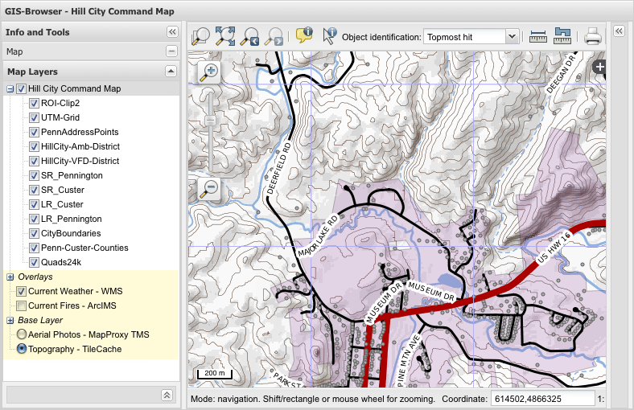

What?
Adds support for additional configured OpenLayers that become either base layers or overlays to the QGIS project map. This offers an advantage to having QGIS server as the client's only source, specifically when some layers of the project are moved to OpenLayers in the client.
Why?
- Significant Performance Increase
- Base layers and overlays can be served by another server process, or server, alleviating QGIS Server load.
There's no need to ask QGIS Server to cascade services you won't be editing or styling, or base layers that have static content, like rasters. Depending on the project, using this method can drastically speed up the client's apparent rendering, compared to the same data solely served by QGIS Server.
- Base layers and overlays can be tiled and served as image files, allowing caching on server, CDNs and in browser.
Unless agressive caching of query URLs is used on the server, or via a reverse proxy, all calls to QGIS Server remain uncached in the browser and elsewhere. Using QGIS Server with the project .qgs file a seeded cache of tiles can be generated using TileCache or MapProxy for project layers that can be OpenLayers in the client.
While tile caching can be used as a source layer in the QGIS project file, cascading the service is required, which slows down the delivery of the resultant single image tile from QGIS Server to the client.
- Alleviating unnecessary QGIS Server load allows for faster label engine response.
Less load frees up QGIS Server to work on dynamic labeling, styling and vector layers when called via WMS. Depending on your project, this method may give better quality results than a fully seeded tile cache of the whole project. The dynamic labeling engine will always be active in QGIS Server, avoiding clipped or crowed labels like can happen when generating even a buffered tile cache. This also gives full freedom to use QGIS for updates to those labeled layers without having to worry about re-tiling and proofing a cache.
- Keeps Same OpenLayers-only Configuration Style
- Regular users only need to know how to edit javascript and configure OpenLayers for this extra feature, similar to the current Global.js settings file. Should be simpler for the majority of users not wanting to learn GeoExt configuration and loader methods to include new layers in the map and map tree.
Current Caveats
- Printing to PDF only includes the QGIS layers, no client base layers or overlays.
There may be a solution whereby a second .qgs project file, which includes the same additional layers as the client, is used for PDF creation. Another solution may be to directly generate a second temp .qgs project file (via copy of the original), dynamically adding the client base layers and overlays, before a call to generate the PDF. Then, delete the temp .qgs after PDF creation.
- Seeded, tiled base layers and overlays with defined resolutions may not match dpi of QGIS Server output.
Sloppy fix would be to use the screenDpi test to augment their OpenLayers tile size to 'match' the requested QGIS Server dpi.
- If anticipated visitor demographic has limited bandwidth, it may be faster to have QGIS Server render everything, instead of asking OpenLayers to use more of the visitors bandwidth with additional requests.
Download
You can download this project in either
zip or
tar formats.
You can also clone the project with Git
by running:
$ git clone git://github.com/dakcarto/qgis-web-client